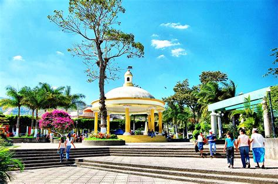
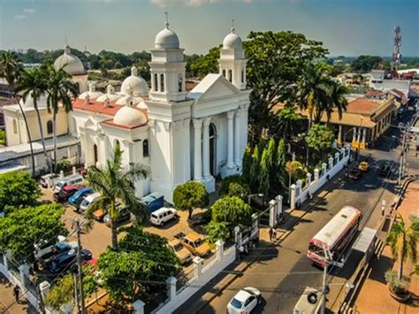
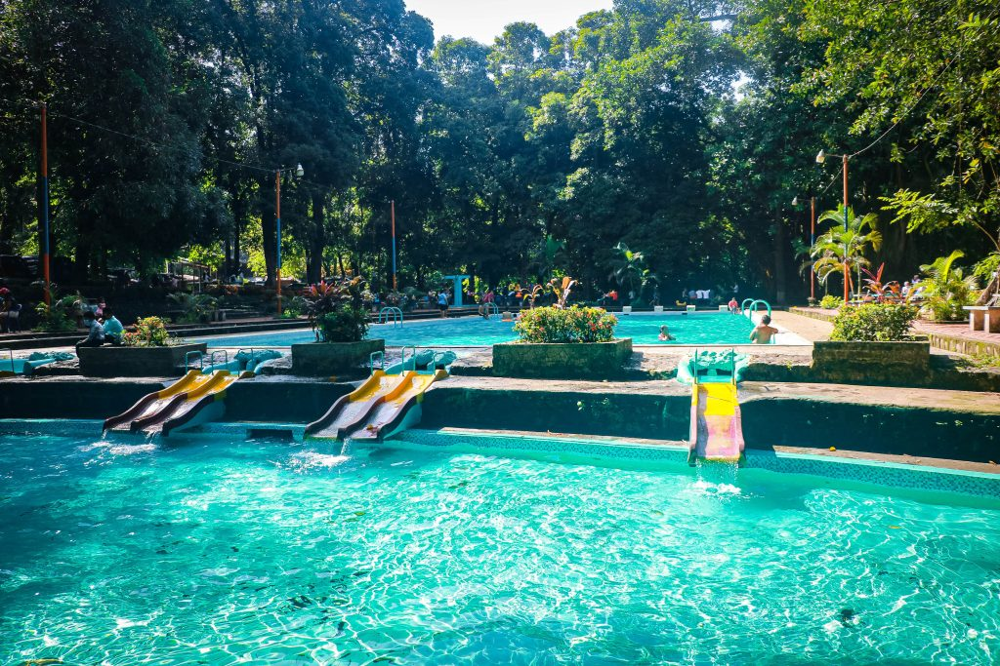
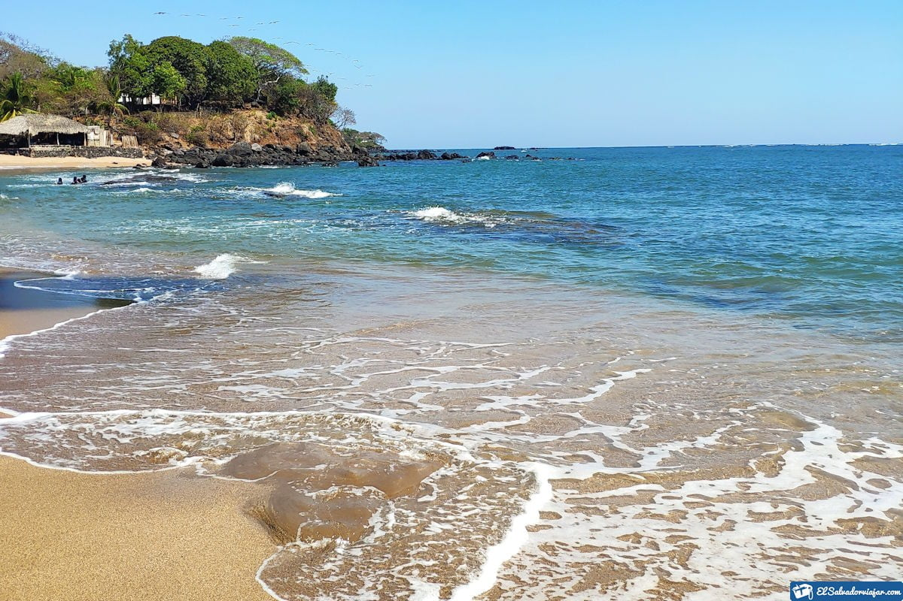
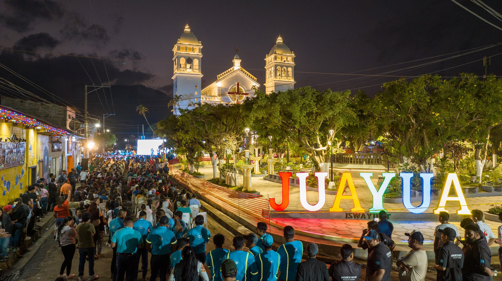
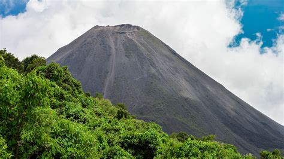
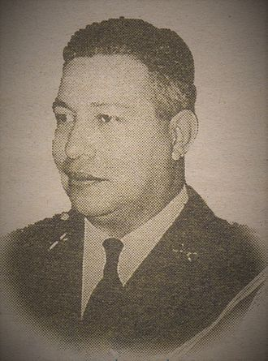

MAPA DE SONSONATE
Información
Sonsonate es un departamento ubicado en la zona occidental de El Salvador, conocido por su producción agrícola, especialmente café, caña de azúcar y frutas tropicales. Su cabecera departamental es Sonsonate, que es un importante centro comercial y de transporte en la región.
Datos Históricos
Sonsonate tiene una rica historia colonial. Fue fundada en 1524 y fue uno de los principales centros de producción agrícola durante la época colonial. Durante el siglo XIX, se consolidó como una ciudad clave en el comercio de añil y otras mercancías agrícolas.
Lista de Municipios
- Sonsonate (cabecera)
- Acajutla
- Armenia
- Caluco
- Cuisnahuat
- Izalco
- Nahuizalco
- Juayúa
- Nahulingo
- Salcoatitán
- San Antonio del Monte
- San Julián
- Santo Domingo Guzman
- Santa Catarina Masahuat
- Santa Isabel Ishuatán
- Sonzacate
Centros Turísticos
Parque Recreativo Atecozol Su nombre tiene origen en las raíces indígenas de origen náhuatl que significa “Cuna del Señor de las Aguas”, se ubica en la Ciudad de Izalco, departamento de Sonsonate, a 58 kilómetros de la capital de San Salvador y fue fundado por don Raúl Contreras durante la administración del Coronel Oscar Osorio en el año 1956. Es uno de los Parques Recreativos más atractivos con los que cuenta El Salvador
Centros Turísticos
Entre las hermosas playas que cubren el extenso litoral salvadoreño, Playa Los Cóbanos se destaca.
Centros Turísticos
En medio de montañas y paisajes espectaculares se encuentra Juayúa, otro municipio de la Ruta de Las Flores, te espera con un clima fresco, lleno de paisajes y destinos naturales en Sonsonate, al occidente de El Salvador. En el casco urbano encuentras tiendas de artesanías, cafés, viveros, restaurantes, galerías de art
Lagos
El departamento de Sonsonate en El Salvador no cuenta con lagos naturales de gran tamaño.
Ríos
Río Sensunapán. Pertenece a Nahuizalco departamento de Sonsonate en El Salvador, es un arroyo que está situado cerca de Playa de Acajutla y Playa El Limón..

Volcanes
El volcán Izalco, uno de los volcanes más activos de la región, es una de las principales atracciones turísticas de Sonsonate. La zona cuenta con varios senderos que ofrecen vistas espectaculares del cráter y los alrededores.
Personajes Célebres
Óscar Osorio Hernández (Sonsonate, El Salvador, 14 de diciembre de 1910 - Houston, Estados Unidos, 6 de marzo de 1969) gobernó como miembro del Consejo de Gobierno Revolucionario del 14 de diciembre de 1948 al 14 de septiembre de 1950. Fue Presidente Constitucional de El Salvador desde el 14 de septiembre de 1950 hasta el 14 de septiembre de 1956.
